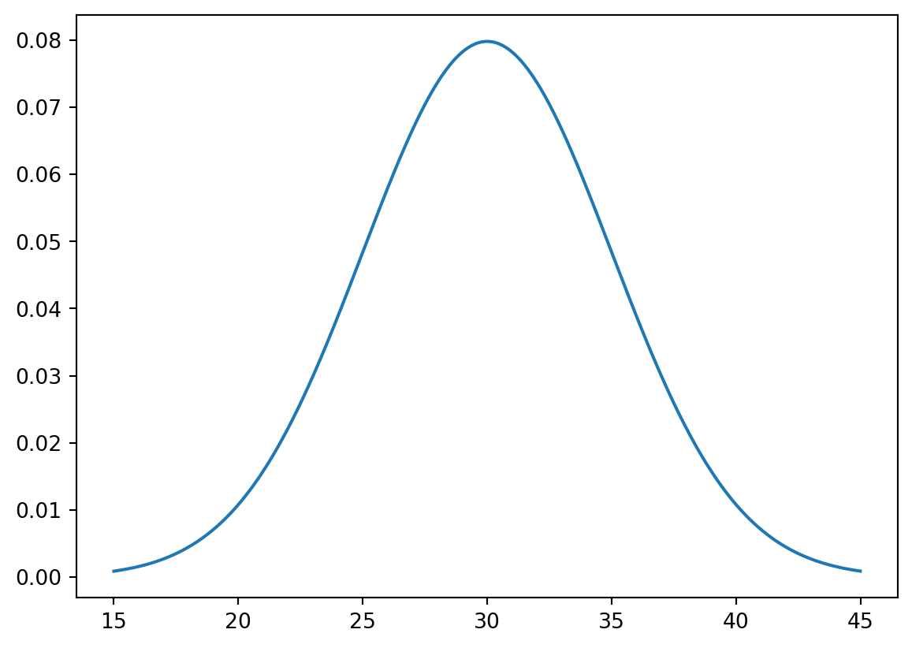
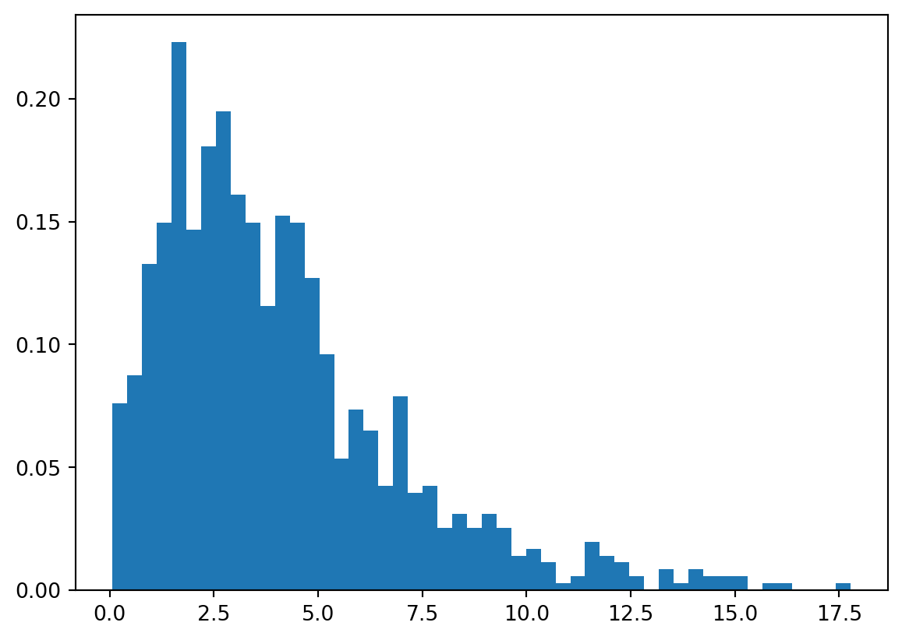

import numpy as np
from scipy.stats import norm
import matplotlib.pyplot as plt
x = np.arange(15,45,0.01)
prob = norm.pdf(x, loc=30, scale=5)
plt.plot(x,prob)
이예솔
September 2, 2024
| 키트/실제 | 양성 | 음성 |
|---|---|---|
| 양성 | 370 | 10 |
| 음성 | 15 | 690 |
있을 확률을 97%라며, 키트의 우수성을 주장했다.이 주장이 옳지 않은 이유를 서술하세요.
(array([0.07622145, 0.08751351, 0.13268177, 0.14961987, 0.2230183 ,
0.14679686, 0.18067306, 0.19478814, 0.16091194, 0.14961987,
0.11574368, 0.15244289, 0.14961987, 0.12703574, 0.09598256,
0.05363731, 0.07339843, 0.06492938, 0.04234525, 0.07904446,
0.03952223, 0.04234525, 0.02540715, 0.03105318, 0.02540715,
0.03105318, 0.02540715, 0.01411508, 0.0169381 , 0.01129207,
0.00282302, 0.00564603, 0.01976112, 0.01411508, 0.01129207,
0.00564603, 0. , 0.00846905, 0.00282302, 0.00846905,
0.00564603, 0.00564603, 0.00564603, 0. , 0.00282302,
0.00282302, 0. , 0. , 0. , 0.00282302]),
array([ 0.06952138, 0.42375239, 0.77798341, 1.13221443, 1.48644544,
1.84067646, 2.19490748, 2.54913849, 2.90336951, 3.25760053,
3.61183154, 3.96606256, 4.32029358, 4.67452459, 5.02875561,
5.38298663, 5.73721764, 6.09144866, 6.44567968, 6.79991069,
7.15414171, 7.50837273, 7.86260374, 8.21683476, 8.57106578,
8.92529679, 9.27952781, 9.63375883, 9.98798984, 10.34222086,
10.69645188, 11.05068289, 11.40491391, 11.75914493, 12.11337594,
12.46760696, 12.82183798, 13.17606899, 13.53030001, 13.88453103,
14.23876204, 14.59299306, 14.94722408, 15.30145509, 15.65568611,
16.00991713, 16.36414814, 16.71837916, 17.07261018, 17.42684119,
17.78107221]),
<BarContainer object of 50 artists>)